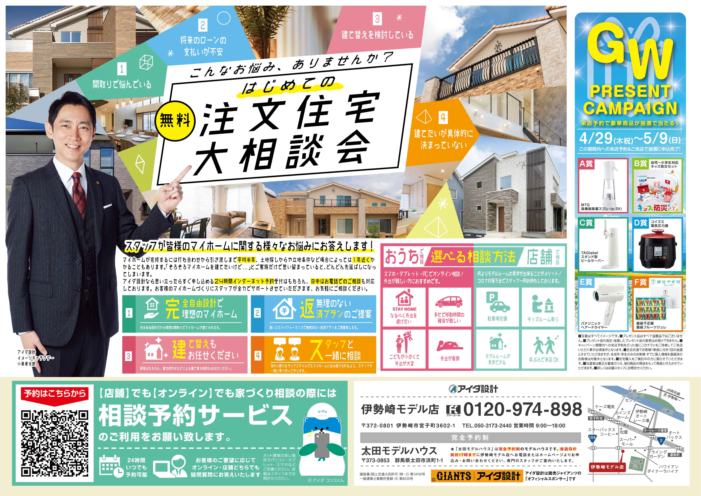
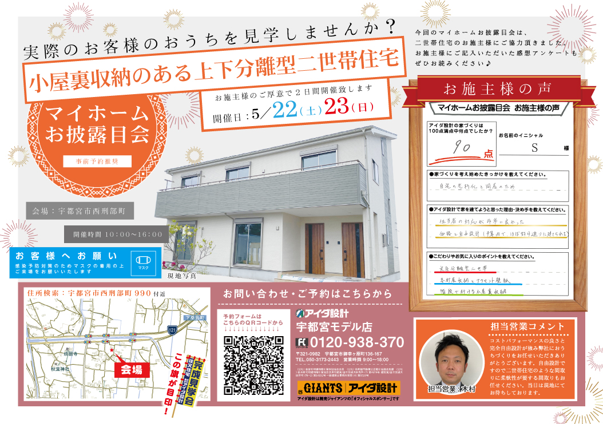
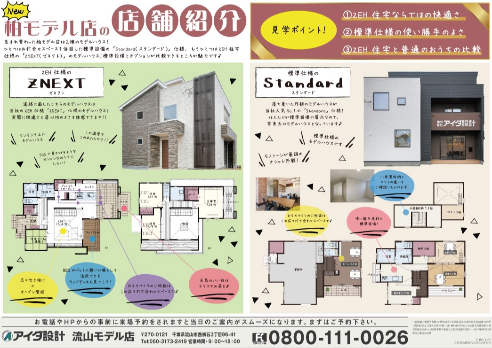
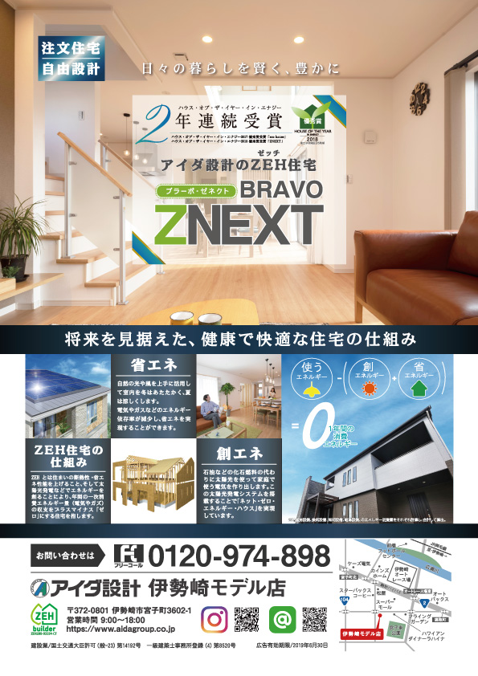
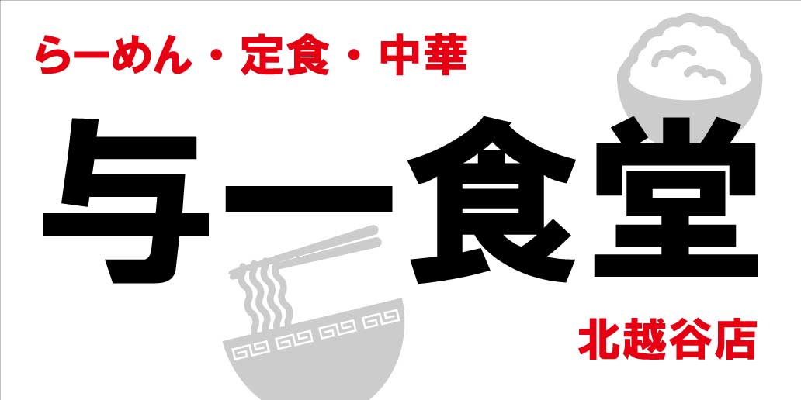
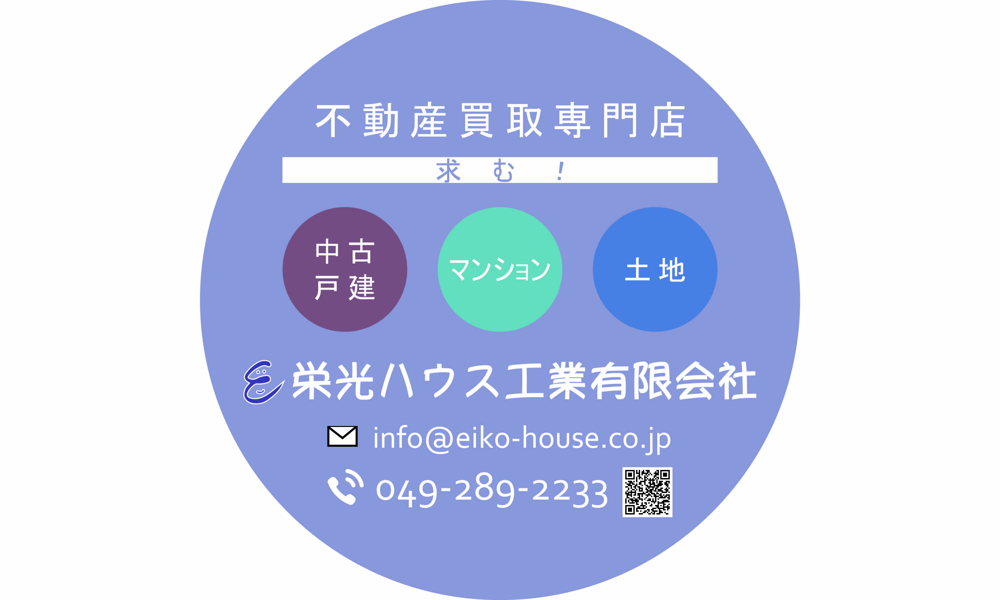

ハウスメーカー時代
20歳の時、新卒でハウスメーカーに入社。 インテリアデザインを学んでいた延長で、 不動産のグラフィックデザイナーとしてチラシやポスターの制作に従事。 主に注文住宅のチラシを担当し、常時20〜30店舗分のチラシを制作。 他には不定期で会社が協賛している 山中湖のマラソン大会や、浅田真央さんのアイスショー、 プロ野球のジャイアンツやプロサッカーの大宮アルディージャなど 埼玉県外のイベントにもスタッフとして積極的に参加。 埼玉のローカルテレビに出演したことがあり、 お笑いトリオ・ジャングルポケットの太田さんとモデルの近藤千尋さん夫妻と 共演させていただいたりと盛り沢山な経験。 この会社ではやり切ったと感じて４年半務めた末、退職。
[ 制作実績 ]
2021年度、全国約100店舗分のGWの共通紙面の制作を担当。 ５つほど通常デザインがあり、統計を取ったところ、 このデザインが一番反響がありました。
お施主様のお家を期間限定で一般公開する「完成見学会」の紙面の制作。 通常の反響紙面とは別に制作し、3月などの繁忙期は月に10現場以上制作することも。 制作したチラシの来場反響から1年で2件の御成約に繋がりました。
担当エリアの店舗がリニューアルするための告知チラシの制作。 Instagramなどを活用する奥様向けに可愛らしいテイストに。

千葉エリア限定販売の「ストロング」の商品のチラシ広告を担当。 地震の他、台風などの強風の揺れも吸収する「FRダンパー」と言う 制震装置が標準設備のオリジナル商品です。 先輩や他部署の方と連携し、上長と相談しながら制作した力作。
情報誌の掲載用にリサイズ・校正した紙面。 店舗によっては毎月や、3ヶ月に1度など掲載しており、 媒体によってはこちらで制作したり、 デザイナーさんに制作していただいた紙面を校正する形など形は様々。 こちらは公務員向けの情報誌だったため、少し堅めのイメージで制作しました。
デザイナー・看板印刷オペレーター
主に自社店舗の看板印刷、外注案件の印刷・デザイン起案を担当。 入社して１ヶ月経った頃、突然事務所の壁をブチ壊されたことを機に退職を決意(実話)。 在職期間はたったの3ヶ月半。 その割にはデザインいろいろとやっていた。
制作実績
 